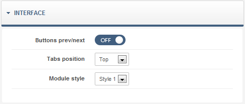
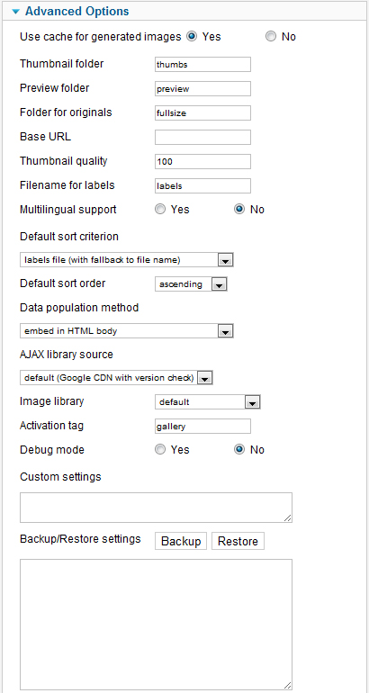

Activity 1.2 - Premium Joomla 2.5 Template
Created: 09/01/2012 | Demo site
By: marbol2
Contact info: Themeforest | Gmail | Twitter | Facebook
Thank you for purchasing my theme. If you have any questions that are beyond the scope of this help file, please feel free to use Support Forum. Thanks so much!
Table of contents
- How to install complete site?
- How to install template bundle?
- How to install only template?
- How to change style?
- How to change logo?
- How to install Full Slider?
- How to install DJ Slider?
- How to install "Our Clients" module?
- How to install 3D Slider?
- How to install Content Slider?
- How to install Tabs module?
- How to install "Latest Projects" module?
- How to install "From Our Blog" module?
- How to install Newsletter module?
- How to install gallery plugin?
- Update
- Gantry Framework Documentation
- Joomla Documentation
- Credits
How to install complete site?Top
Activity Template included quickstart package. activity_quickstart.zip = Joomla + Activity Template + All Activity which I Used in this Template + Demo Content . After installation you will get complete site like a demo site.
Login into your administrator panel using "admin" as username and "demo" as password.
Change the password (Site - My Profile).
How to install template bundle? Top
Template Bundle = Gantry Library + Gantry Component + Gantry Plugin + Activity Template + RockExtender Plugin + RockNavMenu Module
How to install template?Top
Before template installation you need install Gantry Framework plugin. So download latest version of this plugin from here. Install it like a standard Joomla extensions (EXTENSIONS ---> EXTENSION MANAGER find plugin and click "Upload and Install".
Now you may install Activity template so go to admin panel EXTENSIONS ---> EXTENSION MANAGER find activity_template.zip file on your computer browser and click "upload and install".
After installation go to EXTENSIONS ---> TEMPLATE MANAGER find extension - default theme and make default. It's done!
How to change style?Top
Go to admin panel of the template.
You may choose black and white style.
Or You may create your own style. Change background, font and headings color, links color etc.
How to change logo?Top
Create Your logo image in png format (e.g. my-logo-image.png). Upload it to: joomlaRoot/images/my-logo-image.png. Next go to admin panel of the template --> Features tab and set all settings like in the following image:
How to install Full Slider?Top
In download folder find mod_mbCycleSlider_1.0.zip. Install it like a standard Joomla extensions (EXTENSIONS ---> EXTENSION MANAGER find component and next module and click "Upload and Install").
After installation go to EXTENSIONS ---> MODULE MANAGER ---> MB Cycle Slider publis this module in "fullslider" module position and set the followng parameters.
Parameters

How to install DJ Slider?Top
Download Contact Component from here. Install it like a standard Joomla extensions (EXTENSIONS ---> EXTENSION MANAGER find component and next module and click "Upload and Install").
After installation you nedd add category and slides.
Next go to EXTENSIONS ---> MODULE MANAGER find Dj-Slider module, publis it in "slider" module position and set the followng parameters.
Parameters
How to install "Our Clients" module?Top

Download Component and module from here. Install it like a standard Joomla extensions (EXTENSIONS ---> EXTENSION MANAGER find component and next module and click "Upload and Install").
After installation you need add category and slides.
Next go to EXTENSIONS ---> MODULE MANAGER find Dj-Slider module, publis it in "mainbottom-a" module position and set the followng parameters.
Parameters
How to install 3D Slider?Top
Download Piecemaker Module for Joomla 1.7 from here. Install it like a standard Joomla extensions (EXTENSIONS ---> EXTENSION MANAGER find module zip file and click "Upload and Install").
After installation create jpg images 930 x 345 pixels and upload to: joomlaRootDirectory/images/yj_piecemaker/.
Next go to EXTENSIONS ---> MODULE MANAGER find Yj Piecemaker module, publis it in "slider" module position and set the followng parameters.
Parameters

How to install Content Slider module?Top
Download News Show GK4 from here. Install it like a standard Joomla extensions (EXTENSIONS ---> EXTENSION MANAGER find module and click "Upload and Install"). Publish this module in "slider" position.
Parameters
How to install Tabs module?Top
Download Tabs GK4 from here. Install it like a standard Joomla extensions (EXTENSIONS ---> EXTENSION MANAGER find module and click "Upload and Install"). Publish this module in "utility-a" position.
Parameters

How to install "Latest projects" module?Top

Before installation this module You must to install Tabs module!
Download News Show GK4 from here. Install it like a standard Joomla extensions (EXTENSIONS ---> EXTENSION MANAGER find module and click "Upload and Install"). Publish this module in "tab1" position.
Parameters


How to install "From Our Blog" module?Top
Before installation this module You must to install Tabs module!
Download News Show GK4 from here. Install it like a standard Joomla extensions (EXTENSIONS ---> EXTENSION MANAGER find module and click "Upload and Install"). Publish this module in "tab3" position.
Parameters
How to install Newsletter module?Top
Download AcyMailing Starter from here. Install it like a standard Joomla extensions (EXTENSIONS ---> EXTENSION MANAGER find module and click "Upload and Install").
After installation You need configure AcyMailing component. Please look check DOCUMENTATION.
Now go to: EXTENSIONS ---> MODULE MANAGER ---> AcyMailing Module and set following parameters. Publish this module in "features-b" position.
Parameters
How to install gallery plugin?Top
Download latest version of Sigplus Gallery for Joomla 1.6 from here. Install it like a standard Joomla extensions (EXTENSIONS ---> EXTENSION MANAGER find plugin and click "Upload and Install"). To enable this plugin go to EXTENSION ---> PLUG-IN MANAGER find sigplus plugin and enable.
Parameters

Gallery code
2 columns gallery:
<div class="gallery-box">
{gallery width=436}demo/image-gallery{/gallery}
</div>
<div class="clear"></div>
3 columns gallery:
<div class="gallery-box">
{gallery width=276}demo/image-gallery{/gallery}
</div>
<div class="clear"></div>
4 columns gallery:
<div class="gallery-box">
{gallery width=196}demo/image-gallery{/gallery}
</div>
<div class="clear"></div>
UpdatesTop
-
-
Version 1.2 - 07.02.2012
- Updated Joomla Qquickstart Package to 2.5.1 version
- Updated K2 to 2.5.4 vresion
Gantry Framework DocumentationTop
Gantry Framework Documentation
Joomla DocumentationTop
CreditsTop
- Demo Images:
- http://www.sporthdwalls.com/lance-armstrong-40/
- http://www.superbwallpapers.com/sports/caroline-wozniacki-2924/
- http://hdw.eweb4.com/out/107581.html
- http://wallpapers.net/parkour_acrobat-wallpapers.html
- http://wallpapers.net/white_baseballs-wallpapers.html
- http://wallpapers.net/cycle_speed-wallpapers.html
- http://wallpapers.net/the_long_way_home-wallpapers.html
- http://wallpapers.net/thoroughbred_horse_racing_turfway_park_kentucky-wallpapers.html
- http://wallpapers.net/taking_the_plunge_klamath_national_forest_california-wallpapers.html
- http://wallpapers.net/stevens_pass_ski_area_washington-wallpapers.html
- http://wallpapers.net/off_the_lip_wave_riding_maui_hawaii-wallpapers.html
- http://wallpapers.net/indian_creek_utah-wallpapers.html
- http://wallpapers.net/motocross-wallpapers.html
- http://wallpapers.net/vertical_challenge-wallpapers.html
- http://wallpapers.net/leap_of_faith-wallpapers.html
- http://wallpapers.net/heavens_view-wallpapers.html
- http://wallpapers.net/motocross_2-wallpapers.html
- Icons:
- http://www.komodomedia.com/blog/2009/06/social-network-icon-pack/
- http://www.yummygum.nl/
- http://webtreats.mysitemyway.com/
- Extensions:
Once again, thank you so much for purchasing this theme. As I said at the beginning, I'd be glad to help you if you have any questions relating to this theme. No guarantees, but I'll do my best to assist. If you have a more general question relating to the themes on ThemeForest, you might consider visiting the forums and asking your question in the "Item Discussion" section.
marbol2